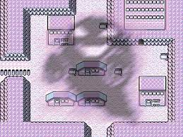

En marzo de 1996, tras el lanzamiento de Pokémon Rojo y Verde 1.0, en Japón se dieron 104 suicidios de niños entre 10 y 15 años. Algunos se ahorcaron, otros se arrojaron al vacío desde altos edificios, los hubo que se cortaron las venas.
¿Qué tenían todos en común? Todos ellos, según sus padres, estaban enganchados al juego. Se desencadenó el rumor de que escuchar la música del Pueblo Lavanda incitaba a los menores al suicidio.
Según esta leyenda urbana, ritmos binaurales de tono alto afectaban al cerebro de los niños, aunque, como sucede con el test del mosquito, los adultos eran inmunes a esa frecuencia. Alguien se inventó una enfermedad, "el Síndrome del Pueblo Lavanda", que inducía a los niños al suicidio.
La leyenda se disparó por las redes, amenizada con todo tipo de especulaciones, como el peligro inminente de los cartuchos de juego que todavía circulaban por el mundo, responsables directos de las muertes. Se habló mucho del suicidio de uno de los programadores, Chiro Miura, y del macabro legado que dejó.
El problema de los suicidios juveniles en Japón poco tiene que ver con los videojuegos y mucho con las gran presión que sufren los adolescentes: el temor al fracaso escolar es tan acuciante que la angustia juvenil que se da en cualquier cultura se convierte aquí en obsesión y terror.